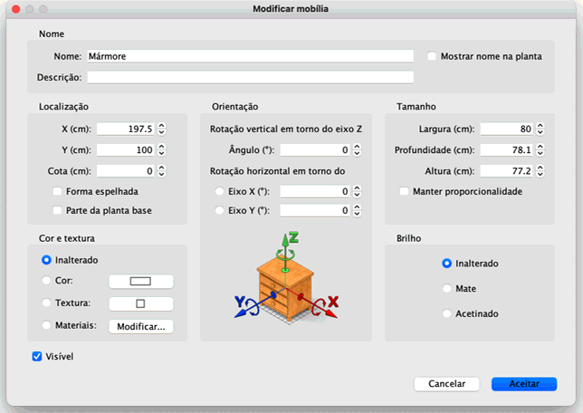
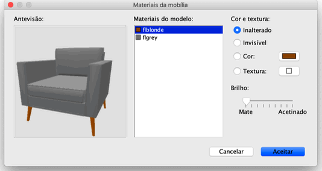

| Editar mobília | |||
Pode editar a localização, o tamanho, a cota e o ângulo da mobília da casa com o rato ou escolhendo
Mobília > Modificar.... Quando uma peça ou um grupo de peças estão seleccionadas na planta, pode também alterar o seu tamanho, cota ou âmgulo com um dos quatro indicadores que aparecem em cada canto da peça seleccionada.
|

|
Quando o ponteiro do rato está sobre um destes cantos a sua forma altera-se, para indicar que pode arrastar e largar o canto para
alterar o atributo correspondente da peça de mobiliário. Enquanto pressiona o botão do rato, surge uma caixa com o
valor do atributo a ser editado. Pode também editar as peças de mobiliário na sua própria janela, fazendo duplo clique na peça na planta ou na lista de mobília, ou escolhendo Mobília > Modificar... depois de a ter seleccionado.  >Na janela de edição de mobília, pode alterar o seu nome, a abcissa (X) e a ordinal (Y) do seu centro, a sua cota
(distância do seu fundo ao chão) e as suas largura, profundidade, altura, cor ou textura, o seu brilho, a sua visibilidade,
o seu ângulos de rotação, se o seu nome é ou não mostrado na planta e se a forma 3D do modelo deve ser
espelhada. Não é possível rodar portas, janelas, escadas e grupos em torno de um eixo horizontal.  A janela Materiais da mobília mostra a lista de materiais que pode editar e uma pré-visualização 3D das alterações de cor e/ou textura que fez, porque os materiais nem sempre têm nomes claros ou bem traduzidos (como cachão em vez de colchão ou mordura em vez de moldura). Pode também rodar o objecto na vista 3D com o rato, se necessário. |
|